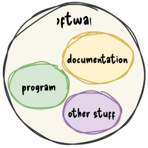

software engineering
Gergő Pintér, PhD
gergo.pinter@uni-corvinus.hu
schedule
| week | date | lecture | practical class |
|---|---|---|---|
| 1 | 2024-09-10 | intro, software architecture, SDLC | |
| 2 | 2024-09-17 | scrum, kanban | |
| 3 | 2024-09-24 | requirement analysis, user story mapping | project assignment |
| 4 | 2024-10-01 | UML, C4 | project workshop |
| 5 | 2024-10-08 | design patterns | project workshop |
| 6 | 2024-10-15 | interfaces, implementation planning | project workshop |
| 7 | 2024-10-22 | wireframing, clean clode | project workshop |
| 8 | 2024-10-29 | school holiday | |
| 9 | 2024-11-05 | code quality, code review | project workshop |
| 10 | 2024-11-12 | testing, legacy code | project workshop |
| 11 | 2024-11-19 | CI, automatization, devops | project workshop |
| 12 | 2024-11-26 | summary, course feedback | project workshop |
| 13 | 2024-12-03 | midterm | project demo |
| 14 | 2024-12-10 | no planned lecture |
schedule
| week | date | lecture | practical class |
|---|---|---|---|
| 1 | 2024-09-10 | intro, software architecture, SDLC | |
| 2 | 2024-09-17 | scrum, kanban | |
| 3 | 2024-09-24 | requirement analysis, user story mapping | project assignment |
| 4 | 2024-10-01 | UML, C4 | project workshop |
| 5 | 2024-10-08 | design patterns | project workshop |
| 6 | 2024-10-15 | interfaces, implementation planning | project workshop |
| 7 | 2024-10-22 | wireframing, clean clode | project workshop |
schedule
| week | date | lecture | practical class |
|---|---|---|---|
| 8 | 2024-10-29 | school holiday | |
| 9 | 2024-11-05 | code quality, code review | project workshop |
| 10 | 2024-11-12 | testing, legacy code | project workshop |
| 11 | 2024-11-19 | CI, automatization, devops | project workshop |
| 12 | 2024-11-26 | summary, course feedback | project workshop |
| 13 | 2024-12-03 | midterm | project demo |
| 14 | 2024-12-10 | no planned lecture |
materials
- available online in two formats
- hangout
- presentation
- pintergreg.github.io/software-engineering

tools
- diagram drawing:
- whiteboard:
- kanban board
- code hosting / task management
program vs. software
A computer program is a sequence or set of instructions in a programming language for a computer to execute. It is one component of software, which also includes documentation and other intangible components.
ISO/IEC 2382:2015 via Wikipedia [1]

program is like a recipe
There is a metaphor saying that a program is like a recipe.
The computer follows the instructions of a program as the cook follows the instruction in a recipe.
Consequently programming is like creating a recipe.
programming vs. software development

- does that mean a program is not
- planned
- documented
- tested
- verified?
- the main difference is the formality of the process
- which correlates the complexity of the project
software development is like building a house
- the software development is often compared to house building
- which is more like a sequential process
- after the planning (including building permit, budget, etc.), the
foundation is built first, then walls and the roof
- these phases cannot be swapped
- after the construction is finished, the contractor leaves the site

{kind=link}
maintenance?
software development not is like building a house
a software does not have to obey the laws of physics
- in software development you can start with the door of the second floor bathroom
- the size of a room can be changed during the construction – even several times
software development is like gardening
- a garden needs to be taken care of constantly
- without attention the garden will decay
- maintenance is part of software development
- software rots
based on Software Architecture Metaphors by Lisa Stähli [2]
what is software rot?
Software rot (or software entropy) is the degradation, deterioration, or loss of the use or performance of software over time [3].
dormant rot: the software in question is not changed, but as the environment evolves, it eventually becomes dysfunctional
photo by Albert CC BY-NC 2.0
what is software rot?
active rot
- the software has undergone constant modifications but gradually loses its integrity
- the constant updates / bug fixing can lead to an evolution process,
- which makes the program deviate from its original design,
- even introducing newer bugs
software development is like gardening - cont.
- external factors like weather, pests, weeds can influence the garden
- change in user requirements, and the external dependencies such as frameworks, libraries, etc. can affect the software
based on Software Architecture Metaphors by Lisa Stähli [2]
software development is like gardening - cont.
- gardeners has a set of tools, selected for the characteristics of the garden and the gardener
- a beautiful garden is a piece of art
- which can also serve a function, like producing vegetables / fruits
- software developer also uses tools chosen according to the environment and type of software
- software is a piece of art, e.g., the UI has to be not just
functional, but aesthetic and ergonomic
- software code/design is also a piece of art; see software craftmanship (later)
based on Software Architecture Metaphors by Lisa Stähli [2]
software craftmanship
As aspiring Software Craftsmen we are raising the bar of professional software development by practicing it and helping others learn the craft. Through this work we have come to value:
- Not only working software, but also well-crafted software
- Not only responding to change, but also steadily adding value
- Not only individuals and interactions, but also a community of professionals
- Not only customer collaboration, but also productive partnerships
That is, in pursuit of the items on the left we have found the items on the right to be indispensable.
© 2009, the undersigned. This statement may be freely copied in any form, but only in its entirety through this notice.
software growth
24 million lines of code – operational and support – needed for the F-35 to be fully operational
the more, the better?
if we wish to count lines of code, we should not regard them as “lines produced” but as “lines spent”
E. W. Dijkstra EWD 1036
Every line of code written comes at a price: maintenance. To avoid paying for a lot of code, we build reusable software. The problem with code re-use is that it gets in the way of changing your mind later on.
keep it simple
A designer knows he has achieved perfection not when there is nothing left to add, but when there is nothing left to take away.
- KISS, an acronym for “Keep it simple, stupid!”
- a variations: keep it stupidly simple
- the term was popular in the 70s
Linux 5.8 – 800,000 new lines of code
Linux Torvalds: despite not really having any single thing that stands out… 5.8 looks to be one of our biggest releases of all time
- how is it manageable?
- process
- version control
- each change must do only one thing
- proper documentation
- changes cannot break the software
- rigorous and automated testing
version control
- version control (a.k.a. revision control) is system for recording and managing changes made in files
- commonly used to manage source code
- however, it can be used to tracking changes to any kind of files
- people often employ their own version control system, without realising it
based on Simon Mutch’s Version Control materials
why you should use version control (for everything)
In practice, everything that has been created manually should be put in version control, including programs, original field observations, and the source files for papers.
– Best Practices for Scientific Computing; Wilson et al. 2012 (arXiv:1210.0530)
this presentation is under version control as well
project complexity


what is software architecture?
“Architecture” is a term that lots of people try to define, with little agreement. There are two common elements: One is the highest-level breakdown of a system into its parts; the other, decisions that are hard to change.
– Martin Fowler - Patterns of Enterprise Application Architecture
In most successful software projects, the expert developers working on that project have a shared understanding of the system design. This shared understanding is called ‘architecture’. This understanding includes how the system is divided into components and how the components interact through interfaces. These components are usually composed of smaller components, but the architecture only includes the components and interfaces that are understood by all the developers.
Ralph Johnson, XP mailing list
All architecture is design but not all design is architecture. Architecture represents the significant design decisions that shape a system, where significant is measured by cost of change.
– Grady Booch
topologies


Layered Architechture

message bus
- shared communication channel that connects multiple components or services
- simple, extensible
server/client architecture
- consists of two parts
- client and server
- distributed
- always the client initiates a connection to the server
- while the server process always waits for requests from any client